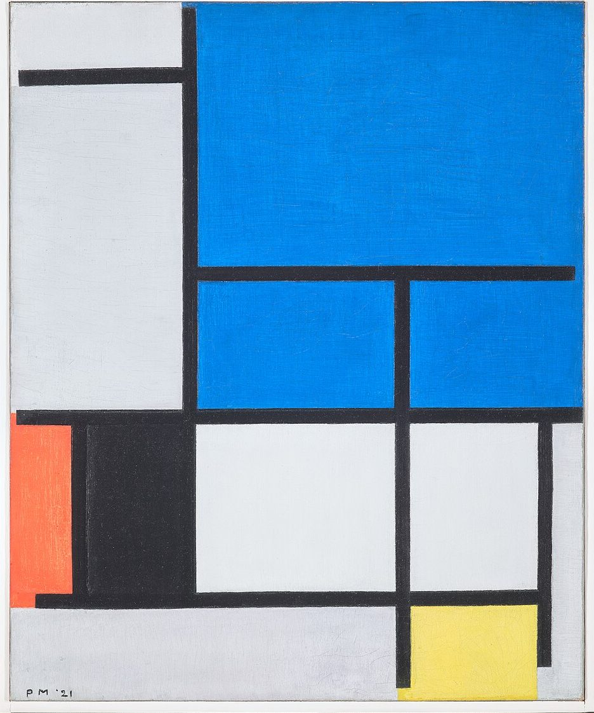

References / Painting / 146
Composition with Large Blue Plane, Red, Black, Yellow, and Gray
A 1921 Mondrian in which one bright blue plane takes the upper right, balanced by a small red strip, a black block, and a yellow square at the opposite edges.
- Source
- Dallas Museum of Art: Composition with Large Blue Plane, Red, Black, Yellow, and Gray
- Creator
- Piet Mondrian
- Made
- 1921
- Style
- De Stijl (agent-proposed, not yet reviewed by a person)
- Moods
- Balanced, bright, orthogonal
- Evidence
- Inspected the Dallas Museum of Art photograph on Wikimedia Commons (7028 × 8465 px, viewed at 960 px), object 1984.200.FA. The photograph includes the white frame edge and a color checker strip at the top, which the stored copy crops off. Catalogue facts are from the museum’s record on Google Arts & Culture.
- Reviewed
- Rights
- Open license, stored. License: public domain. Rights policy

Context
Oil on canvas, 60.33 × 49.85 cm. Dallas Museum of Art, Foundation for the Arts Collection, gift of Mrs. James H. Clark, 1984.200.FA. Google Arts & Culture.
The museum’s text quotes Mondrian: “Color exists only through another color, dimension is defined by another dimension.” Google Arts & Culture.
Observed
- A bright blue plane covers the upper right, about a third of the canvas; a black line divides its lower part into two smaller blue cells.
- A narrow orange-red strip runs down part of the left edge beside a black rectangle.
- A small pale yellow square sits at the bottom right, below a white cell.
- The rest of the surface is light gray and white; the grays differ slightly from plane to plane.
- The black lines are thick and even. The top-left line stops before the left edge, and the lowest vertical line stops above the bottom edge.
- “PM ’21” is painted at lower left.
Why it belongs
The painting shows the rubric’s balance by opposition in its clearest form: the one large color plane is answered by three small ones in the far corners.
Lines that stop short of the edge keep the grid from reading as a closed table, which is a detail most web imitations miss.
Borrow
Give one primary most of the color area and use the other two only as small accents in the opposite corners.
End some divider lines a little before the container edge.
Measured
Machine-extracted by tools/image-traits.py on . Full measurement.
- Mean chroma
- 0.36
- Palette
- #0386e9 29%
- #d8dae0 28%
- #e7eaed 14%
- #37373e 12%
- #037bd6 5%
- #f0dd74 3%
- #fa7f5b 3%
- #464449 1%

